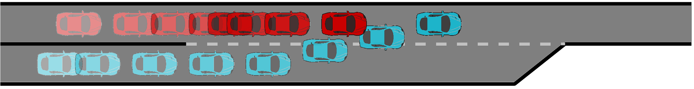

In recent years, self-driving cars are becoming more commonplace and will be sharing roads with human-driven cars in the near future. Self-driving cars operate in dynamic and interactive environments, where the actions of a self-driving car influence and are also influenced by the actions of other human-driven cars. In order to safely and effectively interact with human-driven cars, self-driving cars need to understand the intentions of the human-driven cars. Most planning algorithms passively observe actions and states of the surrounding human-driven cars, then infer the intentions based on the observations. However, different intentions may lead to the same observations under some situations, thus passively observing may cause ambiguities of the true intentions. Inspired by the curious behaviors in human learning process and the fact that humans' actions can be influenced, we propose an algorithm that, while planning for the main task (e.g., merge) based on available information, enables a self-driving car to use curious actions to actively influence and infer the intentions of surrounding human-driven cars .
We model the decision-making process of a curious self-driving car as a partially observable Markov decision process (POMDP) and further recast the POMDP to belief-state Markov decision process (B-MDP). We exploit the cognitive hierarchy theory to reason about the intentions of humans. The proposed algorithm integrates B-MDP, cognitive hierarchy theory, Bayesian learning, and information theory to continually evolve a policy that, while planning for the main task (e.g., merge) based on available information, enables a self-driving car to curiously interact with a human-driven car in order to learn her intentions.
We consider a merging scenario. Initially, the self-driving car is behind of a human-driven car. The human-driven car (red) can be an aggressive car or a cautious car. Without curious behaviors, the self-driving car (blue) decides to yield to both an aggressive human-driven car and a cautious human-driven car, since it can not effectively identify the intentions of the human-driven car. The behaviors of the self-driving car are safe but not efficient.
With the proposed algorithm, the self-driving car decides to accelerate first since it predicts that, the reactions of the human-driven car can be very helpful to identify her intentions.
When interacting with an aggressive human-driven car, the reaction of the human-driven car to the curious action of the self-driving car is accelerating, so the self-driving car identifies the human is aggressive and yields.
When interacting with a cautious human-driven car, the reaction of the human-driven car to the curious action of the self-driving car is decelerating, so the self-driving car identifies the human is cautious and over-takes.
With the proposed algorithm, the behaviors of the self-driving car are safe and efficient.